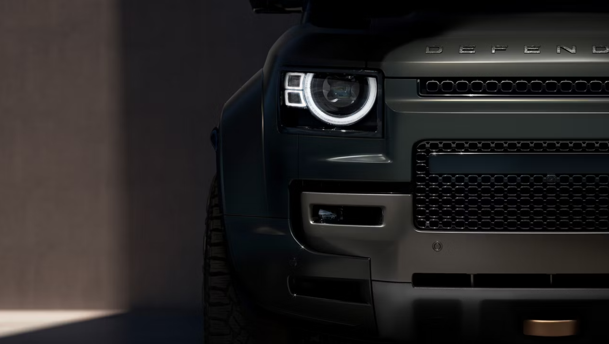
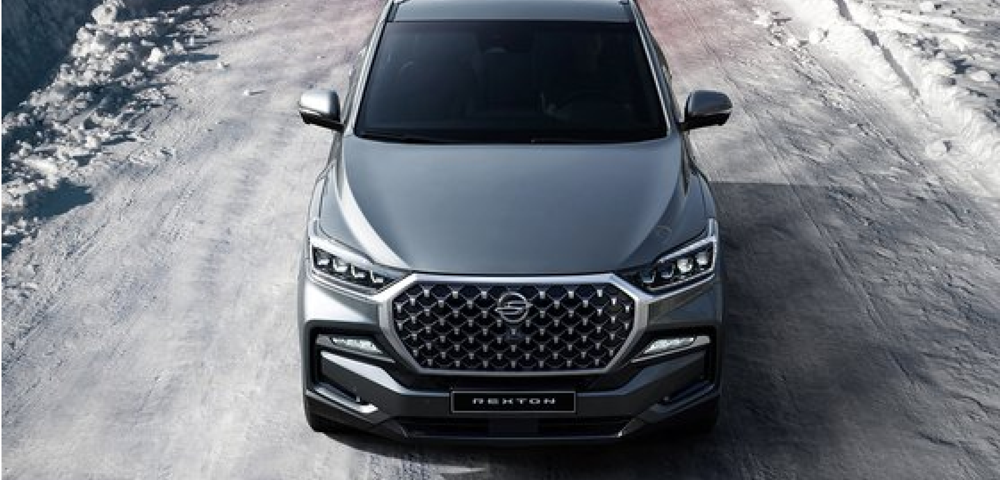
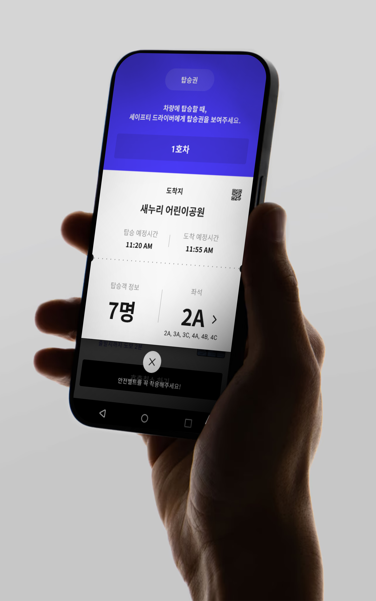
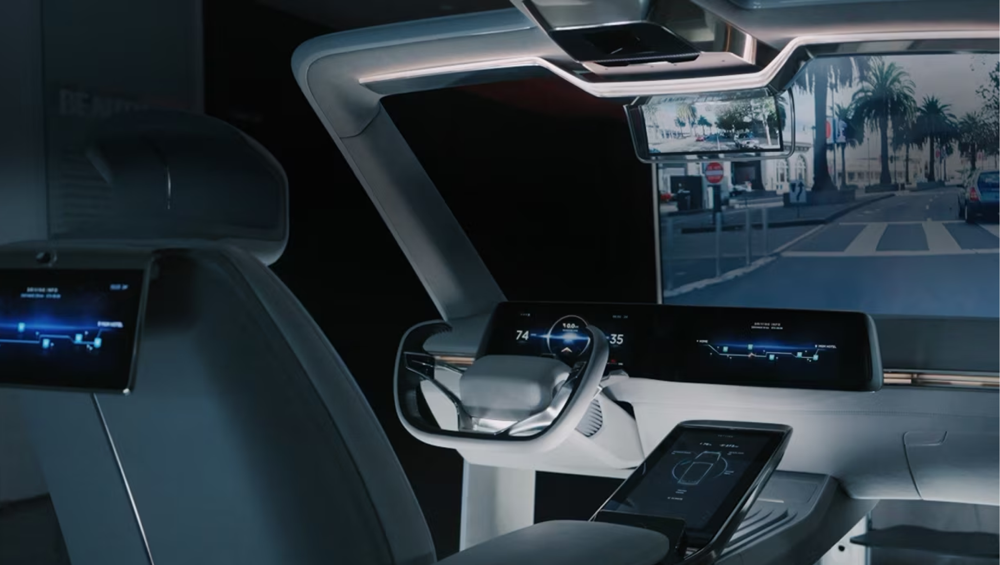
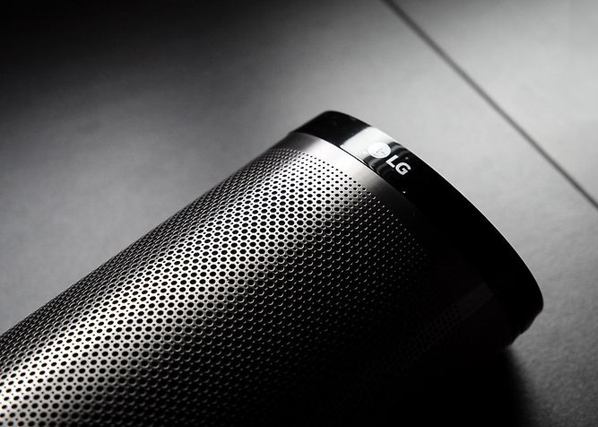
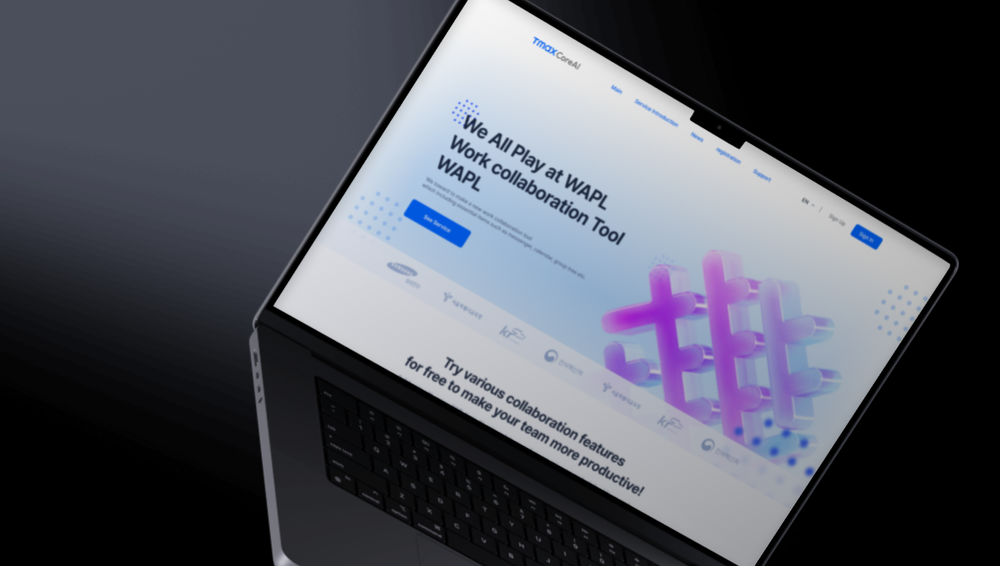

Design Philoshopy
Authenticity never changes.
Being oriented towards
excellence produces the best results.
Career
A variety of design field experiences
including infotainment, UI/UX, research, design strategy
From those experiences, I've gained knowledge that goes beyond my major field.
Additionally, I believe that having a variety of experiences is a significant strength in
preparing for the future. Moreover, it will place me in a unique position compared to other design experts.
Infotainment design
Over the 4 years, I have collaborated with global
companies such as Jaguar Land Rover and
SsangYong Motor. I also participated in various
shows, including CES and Demo Show.
Product design
I’ve experienced design screens from
PC to tablet and mobile. Especially, I specialize in the
field of B2B service design.
UI/UX research
Conducting preference surveys and user research is
necessary before working on UI/UX design. I applied
these practices during SsangYoung cluster design
project and 42dot mobile hailing service project.
WORK

Defender
Infotatinment UI/UX, Vehicle Control Feature Owner, Mass Production Design
2017.12 - 2021.11

Confidential
GAIA Works : Team Collaboration Tools
From PC to Tablet and Mobile UI/UX and Function Flow, Whole Feature Theme
Concept, Project Lead
2024.01 - 2024.05

SSangYong UX Research
Infotatinment UI/UX, Mass Production Design, FGI Interview, Preference Survey
2018.06 - 2020.12

Mobile Hailing Service Field Research
One day Field Research, FGI, Mobile UI/UX Renewal
2022.04 - 2022.06

2019 CES Digital CockPit Advanced GUI Design
Infotatinment UI/UX, Mass Production Design, FGI Interview, Preference Survey
2018.03 - 2018.12
Confidential
PBV Infotainment UI/UX
EV Infotatinment UI/UX, Project Initial Ideation Suggestion
2022.12

Home IOT Hub GUI Project
Unvailled 2016 CEShow, GUI design
2015.05 - 2015.11

WAPL Concept Official Web Site Project
3D modeling, Web UI/UX etc.
2024.09